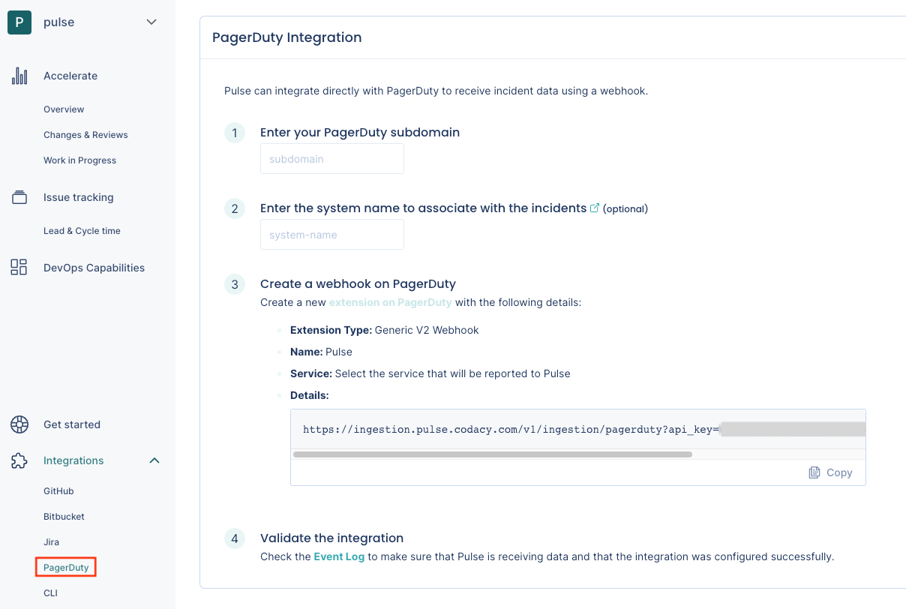
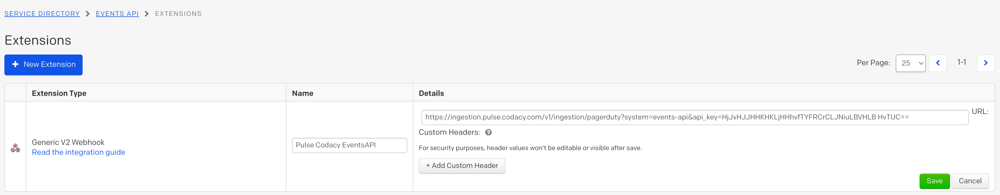

PagerDuty integration¶
Pulse integrates with PagerDuty to receive data about incidents, necessary to calculate the metrics Time to recover and Change failure rate.
Setting up the PagerDuty integration¶
To set up the PagerDuty integration:
-
On Pulse, expand Integrations and select PagerDuty.

-
Fill in the necessary details:
- PagerDuty subdomain: Your custom PagerDuty subdomain. For example,
mysubdomainif you use the URLhttps://mysubdomain.pagerduty.comto access PagerDuty. - Pulse system name: Name of the system to associate with the incidents reported by this integration.
- PagerDuty subdomain: Your custom PagerDuty subdomain. For example,
-
Follow the instructions on the Pulse UI to create a new webhook on PagerDuty using the provided URL. For example:

Collected data¶
The table below lists the data that the PagerDuty integration collects from your PagerDuty webhooks, together with:
- The mapping between the data collected from PagerDuty and the Pulse data model
- The metrics that Pulse calculates from the data to display on the dashboards
| Data collected from PagerDuty | Mapping to Pulse data model | Used in |
|---|---|---|
| Incident |
Incident:
|
Time to recover and Change failure rate on the Accelerate Overview dashboard |